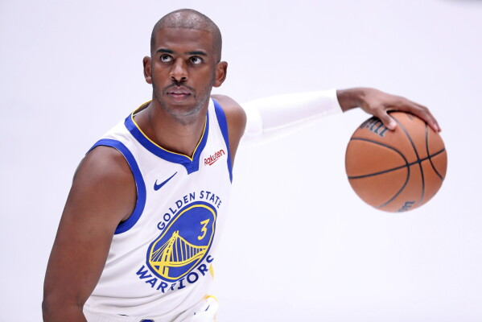
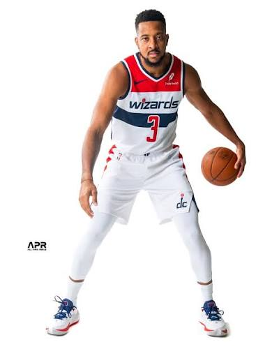

he plays basketball
he used to play for the wizards
now he doesn't :(
unfortunately now he's in new orleans

suffering on the pelicans
he grew up in milwaukee

he went to university of michigan

he was drafted by golden state

he was traded to the wizards for chris paul

he became the greatest basketball player ever(many may disagree)

but then for some reason they traded him for cj mccollum

and now he's trapped on the pelicans

thank you for reading the history of jordan